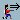
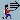
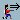
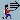

Using KsirK

Preliminary note : the map can be scrolled by three methods. First, you can put your mouse near a border of the window and the map will scroll in that direction. Second, you can use your mouse wheel: With no modifier, it will scroll verticaly; when pressing the Meta key, it will scroll horizontaly. And lastly, you can use the keyboard arrows.
At the beginning of the game, countries are distributed to all the players. Each country contain one army (represented by an infantryman) at this moment. Each player has some armies to distribute to his countries at her turn (indicated by the presence of her name and her flag in the status bar). Note that five armies are represented by a cavalryman and 10 by a cannon.
To put an army on one of your countries, click on it with the left mouse button. To remove an army, click with the right button. Note, as a general rule, that you will never be able to remove more armies than the number you already put.
When a player has distributed all her armies, the next player is automatically selected to do the same task. When all players have finished to distribute their armies, there is two possibilities that can be selected by two buttons :
 : Redistribution
: Redistribution
One player wants to change some of his choices. The first player can then remove an army he just put in a country with the right mouse button and put it in another one with the left mouse button. When he finish, he gives control to next player with the 'Next Player' button. When all players have finished their redistribution, the two buttons are redisplayed.
 : End of redistribution
: End of redistribution
The redistribution is finished and the game can continue.
After the redistribution, a game turn can start. Each player plays at his turn. He has the choice to:
The turn of the current player finishes and it's the turn of the next one.
 
 : Attack with one, two or three armies

 : Attack with one, two or three armies
For a country X to attack a country Y with x armies, 2 conditions must be fullfilled: 1. the two countries must be neighbours; 2. country X must have at least x+1 armies before the attack. When an attack is decided, the attacker must disignate the belligerants: he click on his country, drag the pointer to the attacked country and "drop it" (release the mous button) there. If the attack is valid, 2 defend buttons replace the three attack ones (only one if the attacker attacks with only one army and also if the defender has only one army in his country). They give the choice to the defender to defend with one or two armies.
The defender choice done, the fight will happen and be solved. This will described below.
This is the last action of a player's turn. It gives the possibility to move some armies from one of his country to another, neighbour of the first one. To choose the two countries, please drag'n drop as for an attack. When both countries are choosed, the "Move armies" group of buttons appear (see below for a description of their use). Note that, before the user choose to terminate the move, he can always choose to cancel it by hitting the Cancel button.
To each army in the fight correspond a dice cast, a random number between 1 and 6. The higher result of the attacker is opposed to the other one of the defender. If the attacker's result is strictly higher than the defender one, he wins the fight and the defender army is destroyed. Elsewhere, he looses and its army is destroyed. The same happen for second higher dice of the attacker if there is two or three attackers and two defenders.
If the number of armies in the defender country reaches 0, the ownership of this country changes to the attacker: his flag is set up and one of his attacking armies is installed in his new country. The "Move armies" buttons are displayed in the toolbar to allow the attacker to move some other armies from the attacking country to the newly gained one.
When everybody have played, the turn is finished. Some armies are distributed to the players, in function of the coutries they own: 1 for each group of three countries, with a minimum of 3. There is also a bonus for players that own a complete continent, different for each one. This bonus is of:
Table 2.1. Bonus due to the continents
| Continent | Bonus |
|---|---|
| North America | 5 |
| South America | 2 |
| Europe | 5 |
| Africa | 3 |
| Asia | 7 |
| Pacific Area | 2 |
New in 0.9.1-2, the bonus calculation is implemented !
When a player has finished distributing his armies, he clicks the "Next Player" button to allow the next player to distribute his bonus. As for the initial distribution, when all player have placed their armies, they can start a new redistribution cycle or start a new turn...